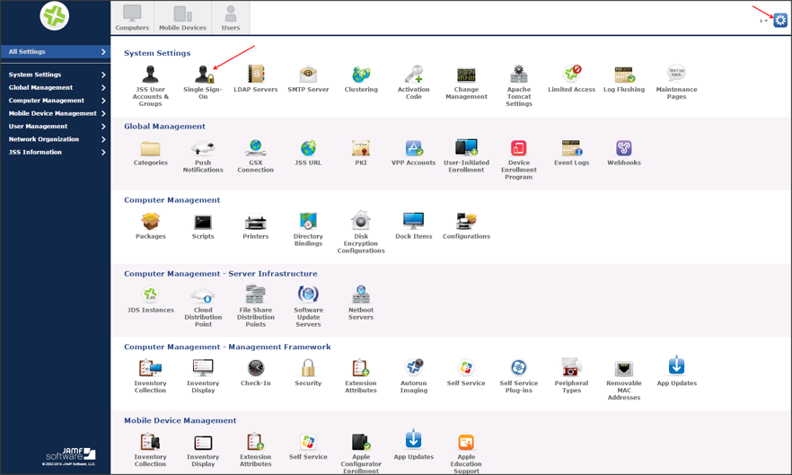
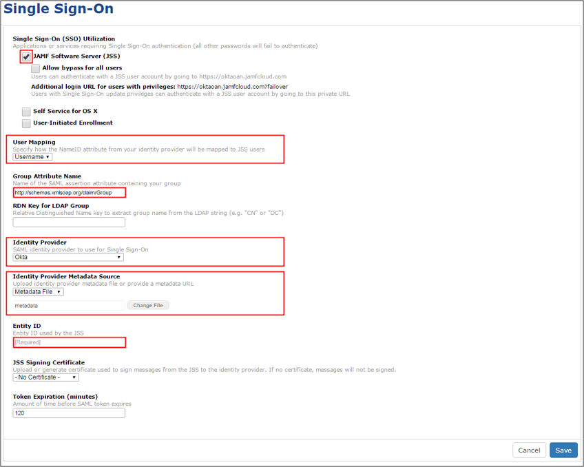

Login to your JAMF Software Server (JSS) account as administrator.
Click on the gear icon at the top-right corner, then select Single Sign-On:

Click Edit, then enter the following (see screen shot at the end of step for reference):
Select the JAMF Software Server (JSS) checkbox.
User Mapping has to match the Application username from Okta. By default, this is set to Username.
Group Attribute Name: Copy and paste the following:
http://schemas.xmlsoap.org/claim/Group
Identity Provider: Select Okta.
Identity Provider Metadata Source: Copy and save the following as metadata.xml. Select Metadata file, then upload the saved file.
Sign in to Okta Admin app to have this variable generated for you.
Entity ID: Copy and paste the following:
Sign into the Okta Admin Dashboard to generate this variable.
Click Save.

Done!
Notes:
IdP-initiated flows and SP-initiated flows are supported.
Just In Time (JIT) Provisioning is not supported.
Go to https://[your-jss-domain] URL.